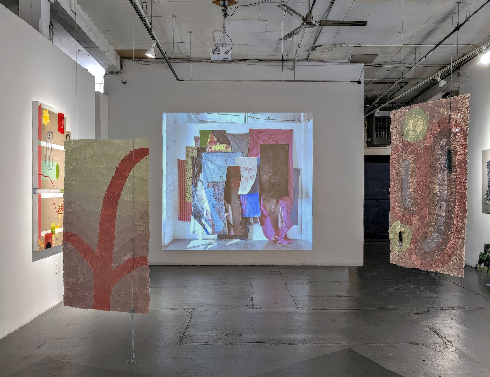
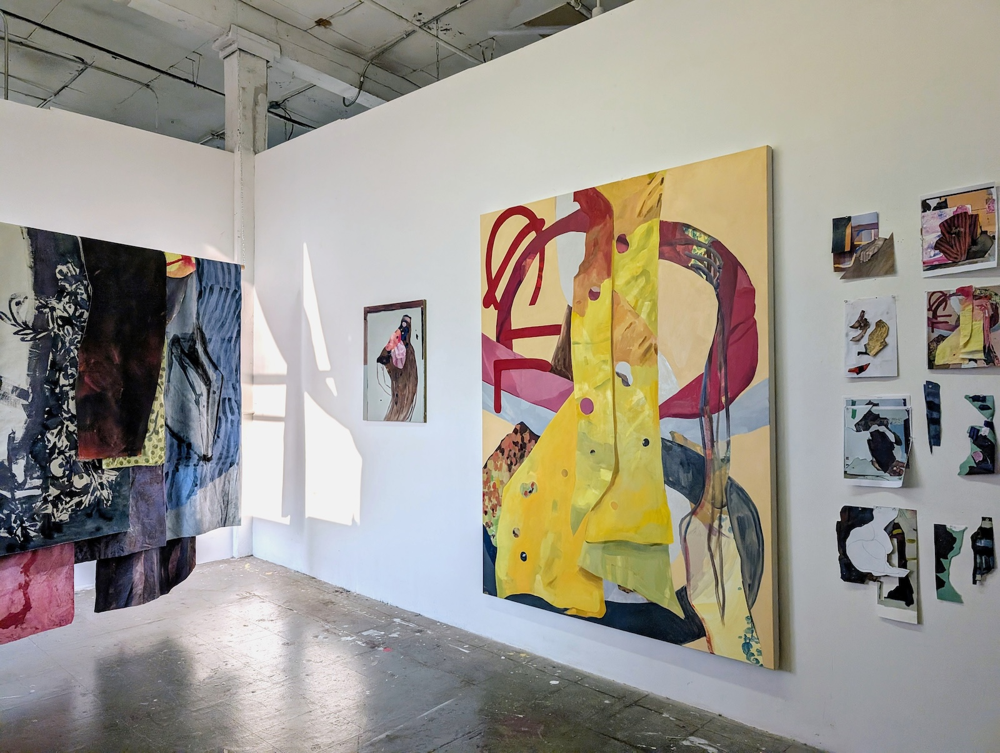
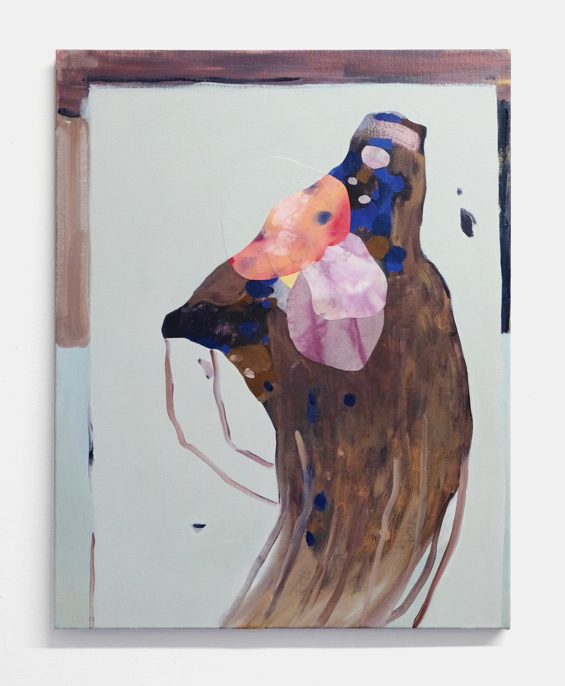
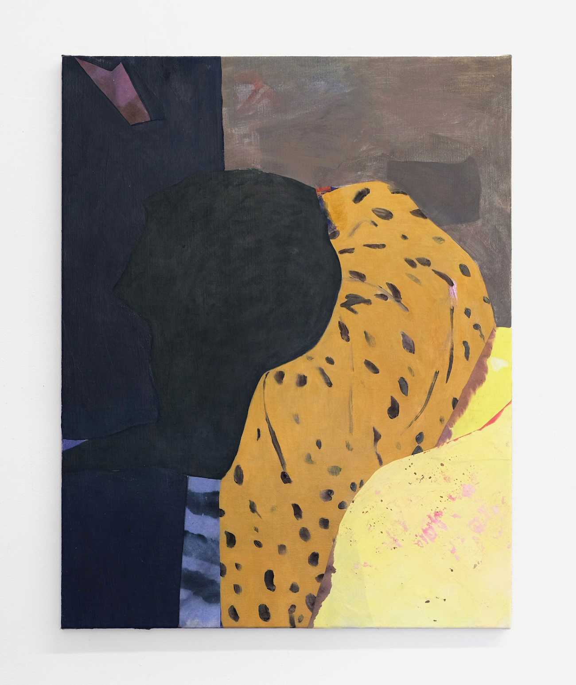

Centre: Holding Patterns (No.3), 2025, digital video projection and sound, loop
Holding Patterns (No.3), 2025, 4K digital video and sound, loop (video stills)

NARS International Studio Residency, 2025

Flip, 2025, oil paint and fabric collage on linen, 28” x 22”

Crook, 2025, oil paint and fabric collage on linen, 28” x 22”